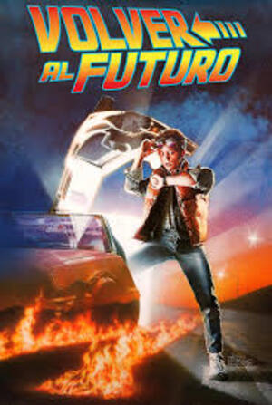

Volver al Futuro

- Duración: 180 min
- Genero: Accion, Aventura
- Director: Robert Zemeckis
- Elenco: Michael J. Fox, Christopher Lloyd
- Clasificacion: ATP
Sinopsis
El adolescente Marty McFly es amigo de Doc, un científico que ha construido una máquina del tiempo. Cuando los dos prueban el artefacto, un error fortuito hace que Marty llegue a 1955, año en el que sus padres iban al instituto y todavía no se habían conocido. Después de impedir su primer encuentro, Marty deberá conseguir que se conozcan y se enamoren, de lo contrario su existencia no sería posible.